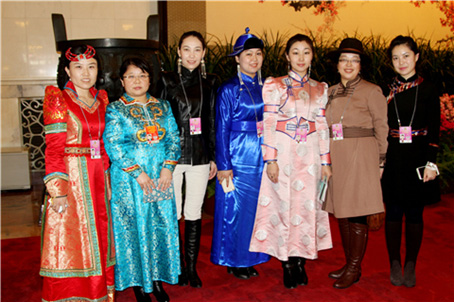

敖登其木格：我的价值在幕后
来源：中华儿女报刊社

在一个阳光明媚的上午，记者在中国民族语文翻译局的大院里，见到了这位清瘦、优雅、文气的年轻女博士。谈起翻译工作，敖登其木格显得稍稍紧张，她是第一次以翻译工作者的身份接受汉语采访，虽然很希望能使更多的人了解她们的工作，但又害怕不能够充分表达想法，一再流露出担忧的神态，记者被这位年轻女子的严谨、认真所打动。
中国民族语文翻译局蒙古语文室，是翻译局成立之初最早设立的文室之一。敖登其木格说自己很荣幸成为这个优秀集体的一员，并将所学得以发挥。讲起到翻译局工作的点滴，她言语中充满珍惜和感激。
与翻译结缘
敖登其木格出生在内蒙古，2013年毕业于内蒙古大学，主修中国少数民族语言文学专业，获得文学博士学位，博士学位攻读的是实验语音学方向。
中国民族语文翻译局是全国最权威的翻译机构。在读大学期间，敖登其木格也曾接触到一些出自翻译局的翻译书籍和材料。2013年博士毕业后，希望可以到北京工作，恰好那一年遇到翻译局在招聘新人，她便报名参加了考试，就这样来到了翻译局蒙古语文翻译室工作。“在来翻译局之前，我接触的翻译工作主要是学术论文翻译，还有一些文学创作、研究型论文写作等，我研究的主攻方向是实验语音学。”她介绍，实验语音学对现在的翻译工作也是有帮助的。翻译局研发的一些机器翻译工作，语音转换、语音合成、语音识别等都会用到实验语音学的相关知识。但她的工作主要还是翻译，业余时间也会做一些翻译的理论研究。
敖登其木格从小学三年级就开始接触汉语，母语蒙古语更是一直是她学习研究的重点，她一直认为翻译对于她来讲不算是一件难事。“来了翻译局之后，才发现翻译是一个专业性特别强的工作。我们所面对的翻译对象是无所不包的知识海洋，如果我们不具备各方面的相关知识，就不可能胜任这一工作。”
痛并幸福着
敖登其木格刚来单位的时候，最初接触翻译很迷茫。“翻译必须要尊重原文，理解原文思路，并且要表达准确。”幸好蒙文室老一辈的翻译家们给了她许多帮助，加上她的聪慧天资和勤奋努力，很快就适应了蒙文室的翻译节奏。她不断地强调，翻译需要不断积累、学习。
2014年，敖登其木格参与翻译了习近平总书记的著作《习近平谈治国理政》和《之江新语》，这对入职不久的她来说是一种挑战，也是提升自己翻译能力和积累翻译经验的机会。“《习近平谈治国理政》这本书影响力很大，由外文出版社以中、英、法、俄、阿、西、葡、德、日等多语种出版发行，由中国民族语文翻译局和民族出版社以蒙古、藏、维吾尔、哈萨克、朝鲜等5种少数民族文出版发行。这关系着党中央的声音能否及时的传递到民族地区、少数民族干部群众的政治理论水平的提高以及我国的方针政策、外交政策的宣传的重大问题。所以翻译必须要准确，不能有丝毫的疏忽。《习近平谈治国理政》一书的翻译，同事们集中办公了将近三个月时间，而我主要参与了核读工作，就是把翻译好的稿子负责一个个进行对照，检查是否存在翻译错误、翻译遗漏、翻译不准确等问题。真是注意力高度集中，特别认真，也特别紧张，生怕出现一丁点儿错误。”
如果说《习近平谈治国理政》的翻译对敖登其木格来讲是了解翻译日常工作、提高政治理论水平和翻译理论水平的特别经历，那么《之江新语》的翻译就是对业务技巧的一次考验。《之江新语》是习近平主席任浙江省委书记时写的一本书，里面有大量的古汉语、古诗词，这就要求翻译者不但要有较高的理论水平，还要有过硬的双语能力、掌握必要的翻译技巧。既要完整传达原文内容，又要把原作风格和译文风格巧妙的结合起来。“我们必须了解这些古诗词的来历、原文的含义、文章引用者的意图。因此要翻查很多相关的资料，而且古诗词的翻译存在一个技术上的难题是，要保持古汉语的原汁原味，最好是翻译成古蒙文或者中古蒙古语，这样的对应就有一些难度。”她不禁感叹：“这本书的翻译对我来讲，确实是一次很好的锻炼。”
全国两会是中国政治生活的大事。敖登其木格对参加过的全国两会翻译也是印象深刻，“在全国两会期间，为了保密工作的需要，我们都在封闭式环境中进行工作。翻译气氛很紧张，不管是从文件的重要性来讲，还是从时间的紧迫性来说都比较紧张。政府工作报告、全国人大常委会工作报告、政协工作报告以及预算报告等都是我们工作的重点。稿件翻译的时间也比较紧迫。我们是个团队，从翻译、审稿、定稿、校对、核读、通读到最后审定都需要密切合作。”她说这些工作经历使她明白，学历固然重要，但学历再高，工作还是和学校不一样，经验很重要，必须不断地进行积累、学习，尤其是翻译，必须要笔耕不辍，不间断地进行翻译实践、苦练翻译技巧。
“在选词造句时不仅要从词的基本意义上去考虑，也要从词的综合意义上去考虑，还有联系文章中所论述的事理或所描述的情景或所叙述的过程去考虑词语的搭配、取舍。”敖登其木格特意着重讲到，蒙文室通过多年的翻译工作的实践，总结经验，制定了从翻译到审稿、定稿、校对、发排等一整套工作规程，在翻译业务中层层把关，精益求精。老一辈翻译家们孜孜不倦、甘为人梯，为文室的建设、质量的把关、人才培养方面都作出了重要的贡献。
特殊岗位上的价值
在许多人眼里，翻译人员由于在幕后工作，很容易被人们忽略掉。但敖登其木格接触到翻译工作之后，发现翻译工作对民族文化发展、民族团结等方面具有重要作用，在如此重要的岗位上她找到了工作的价值。“做我们这个工作汉语一定要好，要准确理解翻译原文的意思；另一方面还要能用母语准确地表达。我是在母语的生长环境中长大，而且对两种文化比较了解，翻译并非是简单的文字与文字对照，翻译需要文化之间的转达。这是我从事这份工作的优势。”
中国民族语文翻译局同样注重对新人培养工作，除进行定期的业务培训之外，近期还出台了内部导师制，在翻译局内部推选一些资历深厚、翻译经验丰富的“老翻译”，定期上课，讲理论、实践、翻译技巧、翻译经验、翻译过程以及翻译要求等。敖登其木格说，“这对我们快速掌握翻译技巧，了解翻译局的翻译要求、培养严谨的翻译态度来讲，实在是太有帮助了。”
敖登其木格除了按时完成局里交给的任务以外，还坚持进行翻译理论研究，先后发表了《从‘中和理论’的角度探讨蒙古语语音和谐的某些特征》、《汉蒙脏腑成语的隐喻认知对比》等论文。
她告诉记者，最近正在撰写一篇关于新词术语翻译的论文，这也是在工作中经常遇到的问题的总结和探索。“新词术语的翻译、审定、统一规范是一项非常严肃和复杂的工作。翻译时要考虑许多的因素，我们常常会遇到翻译难、翻准难、翻得通俗易懂难等问题。”她向记者解释，翻译难，是在译入语中找不到对等或词义完全等值的词汇；翻准难，是指一个新词术语，虽然在译入语中能够找到近似值的词汇，但翻译结果不尽如人意，总觉得还有商榷的余地；翻得通俗易懂难，是指译词概念完整、词义等值，但不够通俗易懂、简练易记。针对这些问题，她探索出一些解决办法，写成了论文，希望可以给其他的翻译者带来启示。
敖登其木格说，她热爱翻译和理论研究，翻译也使她在实践中丰富了知识、增长了才智、开阔了视野，找到了自身的价值。（记者/杜玉）